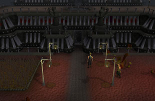
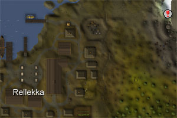
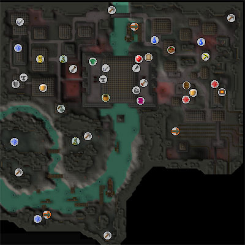
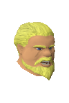
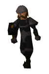

Keldagrim (Members)
Introduction | Location | Points of Interest | Personalities
Quests | The Consortium's Soldiers | Miscellaneous
Quests | The Consortium's Soldiers | Miscellaneous
Introduction

Keldagrim is the dwarven capital, and a mighty city it is. It sits across the Kelda river, which runs beneath the mountains far to the north of RuneScape, with a vast building joining the two halves. Within this building, the Consortium meet to decide how the city should be ruled, though their particular interests often make this more difficult than it should be.
Location

The city also has a series of carts that follow long rail networks between the major dwarven settlements. From Keldagrim it is possible to travel to the Grand Exchange, the Dwarven Mine north of Falador, and to the mines beneath White Wolf Mountain. In addition, those who have completed Another Slice of H.A.M. will be able to use the railway between Dorgesh-Kaan and Keldagrim.
Once into the tunnels, the wandering adventurer will need to catch a boat in order to get to the mines, from which they can access Keldagrim city via the south-west watchtower, or take a boat directly to the city. Thankfully for travellers, there are two such ferries, and a third owned by a trio of oddly talkative dwarves.
Points of Interest

The Consortium, the ruling council composed of the eight most powerful corporations in the city, make their offices in the building spanning the Kelda, where the trade octagon operates. The trade octagon is almost a battlefield, and many young dwarven traders have had their dreams slaughtered by the power of the Consortium's ruling elite.
There are mines scattered around the outskirts of the city. Here you can find a variety of ores, which can be smelted and smithed in the forges of the city. Runite, gold and adamantite can be mined from the north of Keldagrim if you have completed Forgiveness of a Chaos Dwarf.
In the south-east of the city is the largest Blast Furnace the dwarves have managed to create, which they allow visitors to use to smelt vast quantities of ore efficiently.
Those who have completed Forgiveness of a Chaos Dwarf would do well to visit the Chaos Dwarf Battlefield in the south-west for a multi-way combat area.
Personalities

The Red Axe are certainly the most powerful corporation in the Consortium, and Hreidmar is their most powerful member. He is old and hook-nosed, and not easy to like. Despite this (or perhaps because of it) he is admired by a good number of the dwarves of Keldagrim, who hang red banners in their shops to show their fealty to the Red Axe.
|

Though much of his duties are performed by Veldaban, Bisi is actually the head of the Black Guard. While other commanders are in charge of each region, only Bisi can command all of them together. If the Consortium should ever decide to make war upon the trolls on a large scale, they would need to go to Bisi to mobilise the dwarves' fearsome armies.
|
|
| Hreidmar can be found in the Red Axe Headquarters. | Bisi can be found on the first floor of the Black Guard Headquarters. |
|

Commander Veldaban ensures that the Black Guard of Keldagrim do their job properly. His duties, therefore, fall not only to defending the city from the trolls, but also policing the city. He isn't especially fond of the Consortium and their bickering ways, but he still does his job efficiently.
|

Dwarves love their stout, and some of them love it so much that they become reknowned across the city for their adoration of the sweet nectar. The Drunken Dwarf is also famous for his cousin, who is also quite famously drunk, but who travels the world accosting anyone that he remembers in his drunken stupor.
|
|
| Veldaban can be found on the ground floor of the Black Guard Headquarters. | The Drunken Dwarf can be found smashing glasses and bottles in his house in East Keldagrim. |

For eighteen long years Dondakan has toiled at a rock face which is impenetrable to any device or tool he has been able to lay his hands on. His partners abandoned him to his folly years ago, but now he is more certain than ever that there's gold in that thar rock.
|
|
| Dondakan can be found firing a cannon at the wall in the mines south-west of the city. |
Quests
The following quests can be started in Keldagrim:
- The Giant Dwarf (Members)
- Forgettable Tale of a Drunken Dwarf (Members)
- Between a Rock... (Members)
- Forgiveness of a Chaos Dwarf (Members)
The Consortium's Soldiers
|

The Black Guard patrol the dwarf colonies, making sure that the Consortium's laws are upheld and that no one thinks to try their hand at invading. They are excellent fighters, and well equipped. With the Consortium's money behind them, they are a formidable force.
|

The berserkers are the elite of the Black Guard, named for their fury in combat. They are excellent warriors that the trolls know well. They have few weaknesses, and only the more experienced adventurers should chance themselves against them.
|
|
| Black guard soldiers can be found wherever there is wealth to protect. | Black Guard berserkers can be found in West Keldagrim. |
Miscellaneous
- Dwarves are more careful with their possessions than humans, so there are few spawn points in Keldagrim. There is a rake near the kelda hops Farming patch, though.
- Both the Keldagrim Rat Pit and the Blast Furnace are in East Keldagrim.
- If you'd like to set yourself a challenge and earn some experience as you do so, try talking to the various traders of Keldagrim. Some of them have errands and tasks that they need done, and they will pay in either gold or experience.
- Dwarf traders can be pickpocketed in the trade octagon if you have level 90 Thieving. Bars, ore and even level-3 clue scrolls can be gathered in this manner.

More articles in
Cities and Towns
|
|